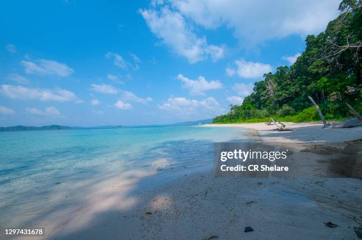

Highlights
- Radhanagar Beach (Havelock Island): Famous for its pristine white sands and turquoise waters, often rated as one of Asia’s best beaches.
- Scuba Diving and Snorkeling (Havelock & Neil Island): Explore vibrant coral reefs and marine life in some of India’s best dive sites.
- Cellular Jail (Port Blair): A historical landmark with light and sound show depicting India’s freedom struggle.
- Ross Island: Explore the ruins of British colonial buildings now reclaimed by nature, offering unique photographic opportunities.
- Baratang Island: Known for limestone caves, mangrove forests, and mud volcanoes for an offbeat adventure.
- Neil Island: Relax at beaches like Laxmanpur, Bharatpur, and Sitapur, each known for calm waters and picturesque sunsets.
- Elephant Beach (Havelock Island): Perfect for water sports like jet skiing, sea walking, and snorkeling with clear waters and coral reefs.





Andaman week
Day 1: Arrival in Port Blair
- Activities: Check-in, relaxation, and sightseeing
- Highlights: xplore Corbyn’s Cove Beach and the Cellular Jail Light & Sound Show
- Explore Port Blair’s history and get a glimpse into India’s freedom struggle at the Cellular Jail.
Day 2: Day Trip to Baratang Island
- Highlights: Mangrove boat ride, Limestone Caves, Mud Volcano
- Activities: Early morning start for a road trip through the Jarawa Reserve Forest, then a boat ride through mangroves to explore limestone caves
- Baratang is one of Andaman’s most unique spots with its fascinating caves and mangroves. Return to Port Blair by evening.
Day 3: Port Blair to Long Island
- Highlights: A peaceful island known for its less-crowded beaches and natural beauty
- Activities: Morning ferry to Long Island; explore Lalaji Bay Beach, a secluded beach accessible by a short boat ride
- Overnight: Stay at an eco-hut on Long Island
- Lalaji Bay offers crystal-clear waters and is great for solitude and relaxation.
Day 4: Long Island to Havelock Island
- Highlights: Radhanagar Beach, Kalapathar Beach
- Activities: Take a ferry to Havelock Island; relax at Kalapathar Beach, known for its unique black rocks, and enjoy a sunset at Radhanagar Beach
- Overnight: Stay at a resort on Havelock Island
Day 5: Visit to Neil Island
- Highlights: Laxmanpur Beach, Bharatpur Beach, Natural Rock Formation
- Activities: Morning ferry from Havelock to Neil Island, explore beaches and rock formations, known for snorkeling and serene beauty
- Laxmanpur Beach is perfect for sunset views, while Bharatpur offers clear waters for snorkeling. Return to Havelock by evening.
Day 6: Havelock Island to Port Blair via Chidiya Tapu
- Highlights: Chidiya Tapu for birdwatching and a breathtaking sunset
- Activities: Ferry back to Port Blair; visit Chidiya Tapu for a scenic drive and nature trai
- Known as the “Sunset Point,” Chidiya Tapu offers great photography opportunities and views.
Day 7: Departure from Port Blair
- Transfer to airport for departure